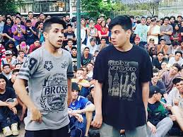
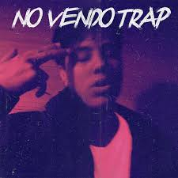

Biografía de Duki
Duki, cuyo nombre real es Mauro Ezequiel Lombardo, nació el 24 de junio de 1996 en Buenos Aires, Argentina. Comenzó su carrera en el mundo del freestyle, destacándose en competencias como El Quinto Escalón.
En 2016, alcanzó la fama al ganar una de estas batallas y rápidamente comenzó a producir música. En 2017 lanzó "No Vendo Trap", un éxito rotundo que lo consolidó en la escena del trap latino.
Con hits como "She Don't Give a FO", "Goteo", y "Givenchy", su carrera internacional explotó. Colaboró con artistas como Khea, Bizarrap, Bad Bunny, y muchos más.

Su álbum "Desde el Fin del Mundo" lo llevó a giras por toda Latinoamérica y Europa. Duki es hoy un ícono cultural y musical, influenciando a una nueva generación de artistas.